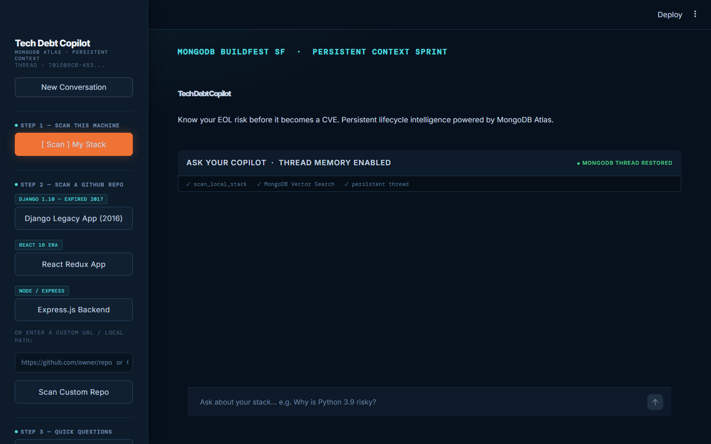
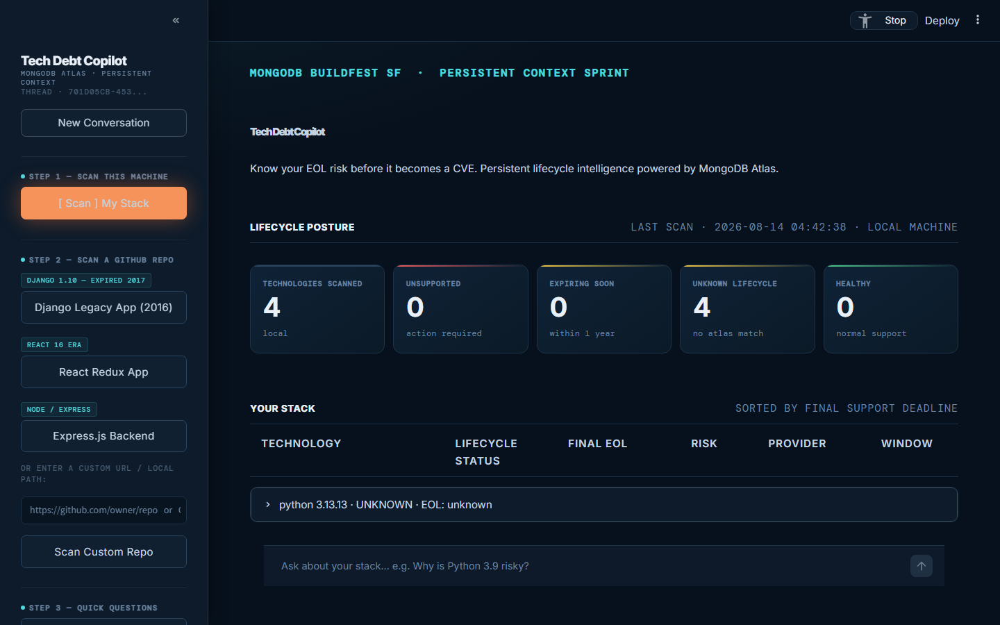
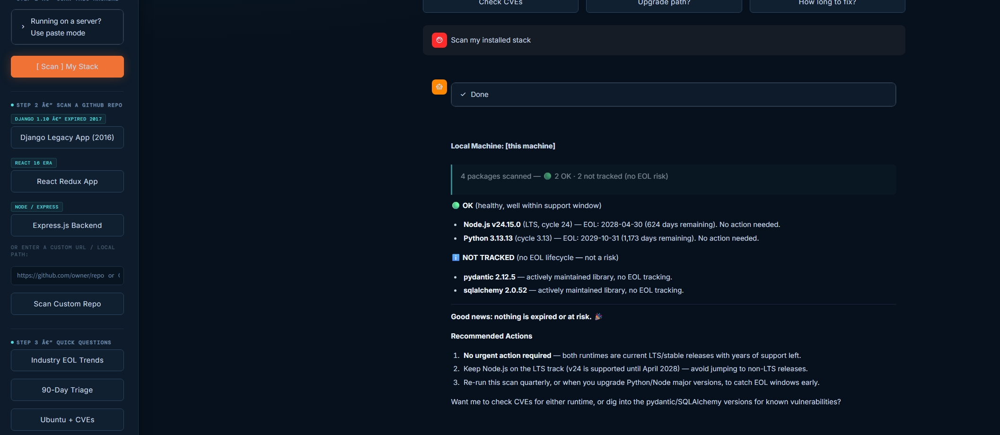
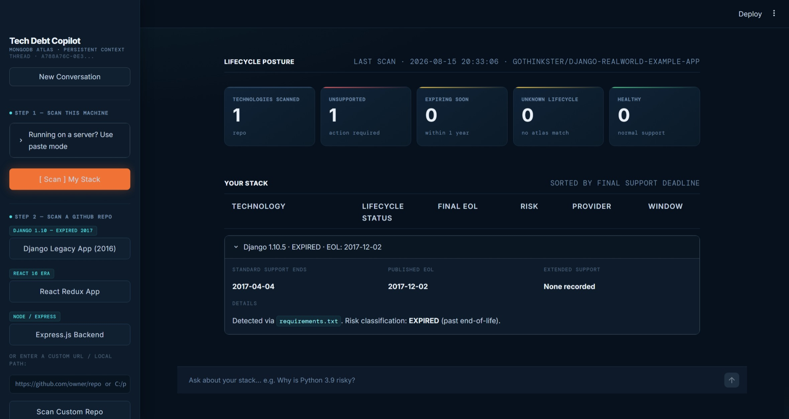
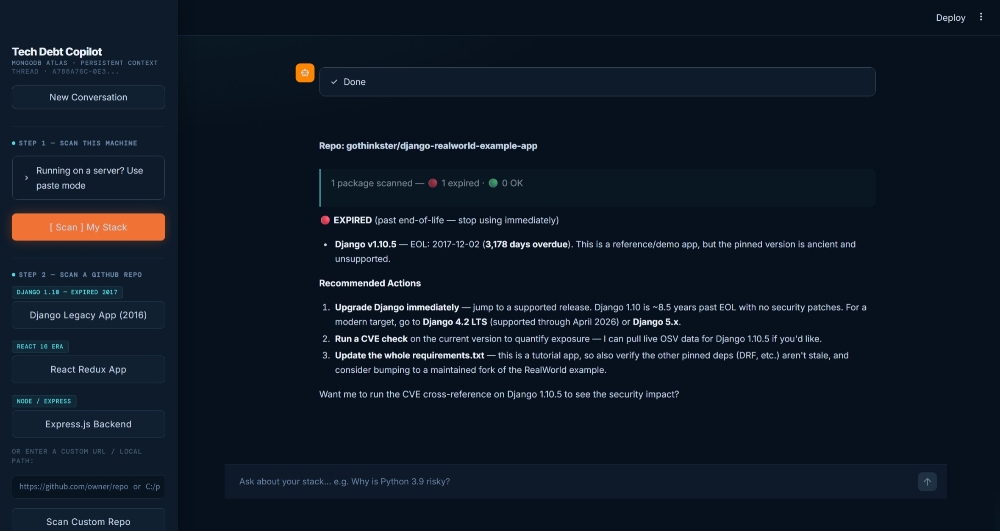
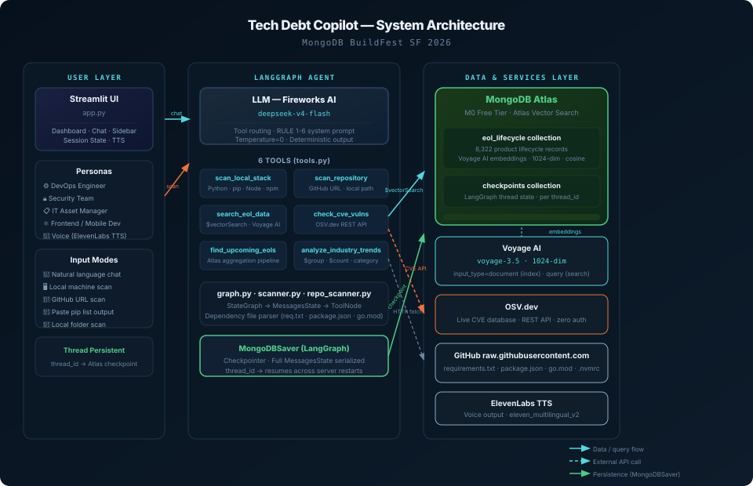
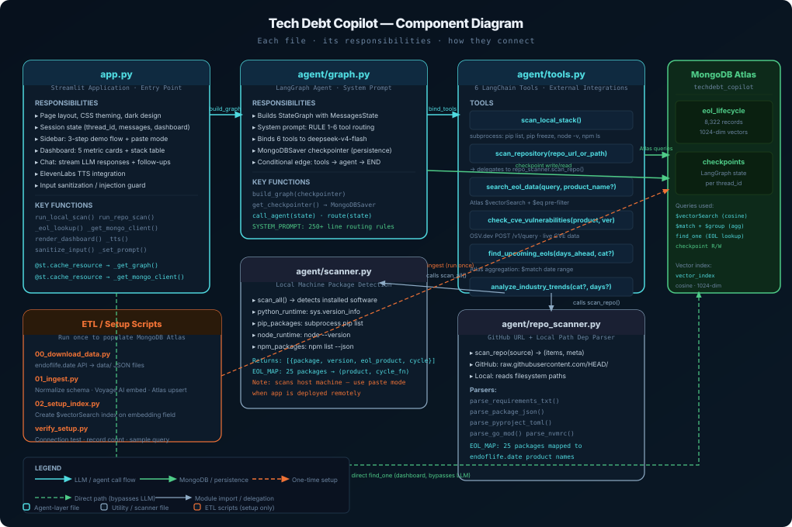

What It Does
Tech Debt Copilot is an AI agent you talk to. You give it a GitHub URL, paste your pip list output, or just ask a question. It tells you which software in your stack is past end-of-life, which is expiring soon, and whether there are active CVEs with no fix available — because EOL packages stop receiving security patches.
The agent remembers every conversation. Restart the server. Close the browser. Come back an hour later. It picks up exactly where you left off — because all state is stored in MongoDB Atlas via LangGraph’s MongoDBSaver checkpointer.
Who It Helps
Tech debt doesn’t care about your org chart. The same EOL problem hits every role differently — the agent speaks to all of them.
See It In Action
Screenshots from the live app. Each tab shows a different part of the workflow — from the initial chat interface to a full GitHub repo scan with critical EOL findings.


find_one() call — bypassing the LLM entirely. Cards show: Technologies Scanned · Unsupported (past EOL) · Expiring Soon (≤ 90 days) · Unknown · Healthy.

eol_lifecycle collection.

requirements.txt, package.json, pyproject.toml, go.mod, and .nvmrc directly over HTTP — no git clone. The dashboard updates with the repo’s risk metrics immediately after the agent responds.

All Features
Six agent tools, three scan modes, persistent memory, voice output, and a real-time dashboard — each feature solves a specific gap in how teams currently manage software lifecycle.
Scan Modes
Local Stack Scan
Detects installed Python runtime, pip packages, Node.js, and npm packages on the host machine. Returns each package with its version, EOL product mapping, and risk level.
GitHub Repo Scan
Accepts any GitHub URL or local folder path. Fetches requirements.txt, package.json, pyproject.toml, go.mod, .nvmrc over HTTP. No git clone, no authentication needed for public repos.
Paste Mode (Deployed)
When running on a remote server, scan_local_stack() scans the server’s packages — not yours. Paste your local pip list or npm ls output into the chat and the agent parses and analyses it with the same full EOL check.
Lifecycle Intelligence
EOL Knowledge Base Search
Semantic search over 8,322 endoflife.date records using Voyage AI 1024-dim asymmetric embeddings. Optional $eq pre-filter scopes results to a single product. Ask in plain English: “Is Python 3.9 still supported?”
90-Day Triage
MongoDB aggregation pipeline: $match on date range, $group by category. Filter by: os · lang · database · framework · service. Surfaces the exact packages your team needs to act on this sprint.
Industry Trends
Aggregates EOL exposure across all tech categories globally. Answers “which ecosystem is most at risk right now?” — useful for vendor assessments and tech landscape reviews.
Security
Live CVE Cross-Reference
Live POST to OSV.dev for any product + version. Returns CVE IDs, CVSS severity scores, and whether a fix is available — or whether EOL status means no patch is coming. No API key required.
Risk-Grouped Reports
All scan results are formatted as: 🔴 Expired → 🟠 Critical (<30 days) → 🟡 High (<90 days) → 🔵 Medium (<1 year) → 🟢 OK. Recommended actions always included.
Input Sanitization
All chat input is sanitized before reaching the LLM — prompt injection patterns are detected and rejected. URL and path inputs are validated before being passed to repo scanner tools.
Persistence & Memory
Conversation Persistence
Every message, tool call, and result is stored per thread_id in MongoDB Atlas via LangGraph’s MongoDBSaver. Restart the server mid-conversation — the agent picks up where it left off. No Redis, no queues.
Follow-up Awareness
Full conversation history flows through the agent on every turn. “What about that Django version?” resolves from context — no need to repeat yourself. References across turns work naturally.
Multi-Thread Support
Each conversation gets a unique thread_id. Start a new conversation with a single button click while keeping all previous threads intact in Atlas. Threads persist indefinitely.
UI & Output
Live Dashboard
Five metric cards (Scanned / Unsupported / Expiring / Unknown / Healthy) render in under 2 seconds from a direct MongoDB lookup — no LLM in the loop. Updates on every scan.
Voice Output
ElevenLabs TTS integration reads agent responses aloud when enabled. Toggle per session. Designed for hands-free monitoring scenarios where you need to hear the risk summary.
Quick Follow-ups
After every scan, contextual follow-up buttons appear: “Check CVEs”, “Upgrade path?”, “How long to fix?”. One click sends the next question with full context already loaded.
How It Works
Three input modes feed a LangGraph agent that routes to one of six tools, queries MongoDB Atlas or live APIs, and writes every turn to a persistent checkpointer.
-
1
You Ask, Scan, or Paste
Type a question, paste a GitHub URL, or paste your
pip list/npm lsoutput. The message shape determines which tool fires — no mode selection required. -
2
LLM Routes to the Right Tool
deepseek-v4-flash follows hard RULE 1–6 blocks in the system prompt. Imperative “IMMEDIATELY call” grammar — not descriptive metadata — forces correct tool selection every time.
-
3
Tool Runs — Atlas or Live API
EOL queries hit MongoDB Atlas
$vectorSearch(Voyage AI 1024-dim asymmetric embeddings). CVE queries hit OSV.dev live. Scan tools run subprocess or HTTP fetches. All results flow back to the agent node. -
4
State Written to Atlas via MongoDBSaver
Every message, every tool call result, every turn — serialized and stored per
thread_idin thecheckpointscollection. Two collections:checkpoints(completed steps) andcheckpoint_writes(in-flight state for crash recovery). -
5
Risk-Grouped Report Streamed to UI
Results grouped by severity: 🔴 Expired → 🟠 Critical → 🟡 High → 🔵 Medium → 🟢 OK. Dashboard metric cards update from a direct
find_one()call — LLM not in the loop for the numbers.
Architecture
Three layers: the Streamlit UI and input modes on the left, the LangGraph agent with six tools in the centre, and MongoDB Atlas plus external services on the right. All persistence flows through Atlas — no separate vector database, no Redis, no queues.

Component Map
Each Python file in the project, its responsibilities, and how they connect. The dashed arrows are paths that bypass the LLM — the dashboard reads MongoDB directly for sub-2s render without going through the agent.

Data Source
The knowledge base is built from endoflife.date — an open-source, community-maintained registry of software lifecycle dates. We downloaded the full dataset via their public API, normalized the schema, and ingested it into MongoDB Atlas with Voyage AI embeddings.
Open-source, community-maintained
8,322 lifecycle records
1024-dim, asymmetric
Why normalization was necessary
The endoflife.date API returns non-uniform schemas per product — some have eol: "2025-01-15", others have eol: false, others have lts: true with no EOL field. Storing this raw breaks every date comparison and aggregation query. The ETL script (01_ingest.py) normalizes all records before embedding: boolean EOL values are converted to null, eol_display is computed for UI rendering, and date strings are standardized. Products covered include languages (Python, Node.js, Go, Ruby, PHP), frameworks (Django, React, Spring, Rails), databases (MongoDB, PostgreSQL, Redis, MySQL), operating systems (Ubuntu, RHEL, Debian, Windows Server), and cloud services.
| Category | Example Products | Records |
|---|---|---|
| Languages & Runtimes | Python, Node.js, Go, Ruby, Java, PHP, .NET | ~1,200 |
| Frameworks & Libraries | Django, React, Spring, Rails, Angular, Laravel | ~2,100 |
| Databases | MongoDB, PostgreSQL, MySQL, Redis, Elasticsearch | ~800 |
| Operating Systems | Ubuntu, RHEL, Debian, CentOS, Windows Server | ~600 |
| Cloud & Infrastructure | Kubernetes, Docker, Terraform, AWS services | ~1,400 |
| Developer Tools | VS Code, Git, npm, pip, Gradle, Maven | ~2,200 |
Tech Stack
Every technology earned its place. The rule: MongoDB Atlas had to be the primary data layer, and every other tool had to genuinely improve on the alternatives available in the hackathon window.
| Library / Service | Role | Why This One |
|---|---|---|
MongoDB Atlas | Vector store + graph persistence | Two jobs in one service: $vectorSearch for EOL lookups, MongoDBSaver for conversation threads. Zero extra infrastructure. |
Voyage AI voyage-3.5 | Asymmetric embeddings | Separate input_type for documents vs queries. Measurably better recall on natural-language EOL questions than symmetric models. |
Fireworks AI deepseek-v4-flash | LLM inference | Hackathon sponsor. Fast inference, low latency, responds well to imperative RULE-based system prompts for strict tool routing. |
LangGraph | Agent orchestration | StateGraph handles the tool routing loop. MongoDBSaver drops in as a checkpointer argument — three lines of code for full persistence. |
Streamlit | Web UI | Fastest path from Python to a shareable demo. Custom CSS achieves the full dark-mode design. Session state manages chat history between reruns. |
endoflife.date API | EOL data source | Best freely available lifecycle dataset. 8,322 records across 464 products, community-maintained, regularly updated. |
OSV.dev | CVE lookups | Open, structured, real-time vulnerability database. Simple REST API, no key required, returns structured advisory data. |
ElevenLabs | Voice output (TTS) | Optional voice narration of agent responses. Toggleable per session for hands-free monitoring use cases. |
What We Actually Learned
Eight things we did not know going in. The ones we are most proud of are not the technical wins — they are the moments where a wrong assumption cost us hours and changed how we build next time.
input_type modes: "document" at index time and "query" at search time. We initially skipped this. Recall on natural-language questions like “is Python 3.9 still supported?” was mediocre. After switching to proper asymmetric mode, results improved noticeably. Read the embedding model docs._eol_lookup() created a fresh MongoClient() on every render, which timed out on Atlas during congested periods. The graph builder’s warm connection stayed alive; fresh ones didn’t. Fix: @st.cache_resource on a shared client. One line.subprocess on the server, which reports the server’s packages — not the user’s laptop. The fix: a paste mode sidebar showing pip list, pip freeze, and npm ls commands. Users run them locally, paste the output, and RULE 2b in the system prompt parses it without calling the scan tool.MongoDBSaver(client, db_name=...) dropped in as the checkpointer argument to graph.compile(). Every message, tool invocation, and state transition is stored automatically per thread_id. Restart the server mid-conversation and the agent picks up exactly where it left off. That is the hackathon theme working as advertised..env is now in .gitignore from commit one on every project we touch.eol: "2025-01-15", others eol: false, others lts: true with no EOL field. Storing raw breaks every date comparison. Our ETL normalizes everything before embedding — boolean EOL to null, computed display strings, standardized date formats. Without this, the vector search is built on inconsistent data.window.scrollTo(0,0) had zero effect. Streamlit renders inside its own scroll container, not the window. The fix was element.scroll_into_view_if_needed() on the specific element we needed visible — targeting the DOM element directly instead of the window scroll position.The Team
Four people with four different initial ideas — the team started the day debating directions and converged on Tech Debt Copilot. What shipped was better for the tension. One working demo, one day.
Get Started
Clone the repo, add your keys to .env, run the ETL once to populate Atlas (about 12–15 minutes for the full 8,322-record ingest with embeddings), then launch.